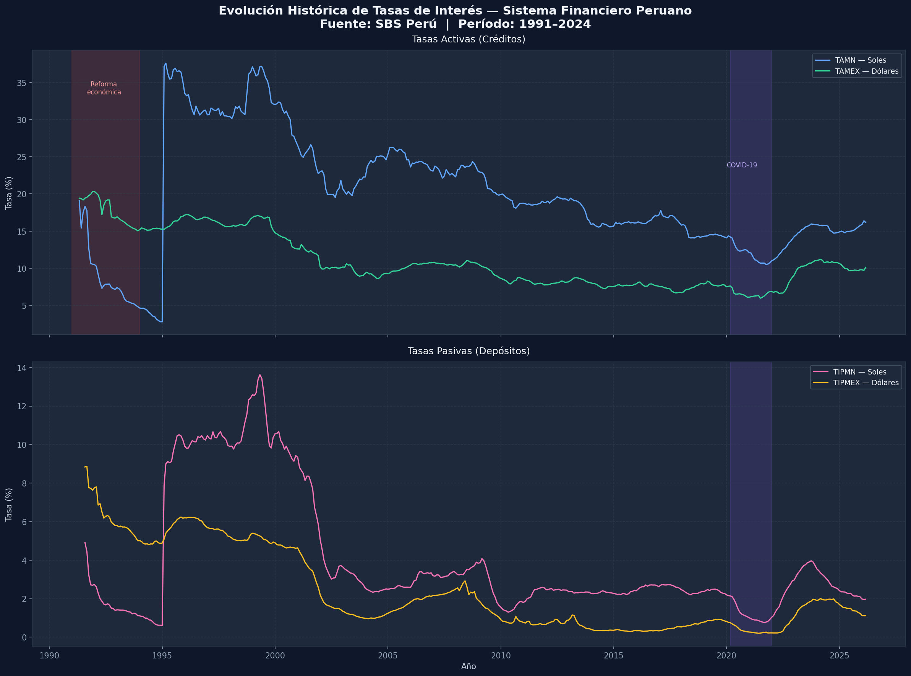
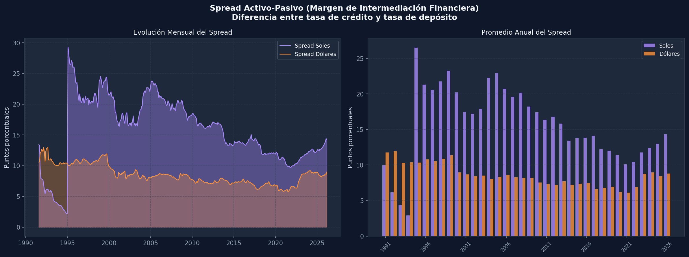

Contexto
Las tasas de interés son uno de los indicadores más relevantes del sistema financiero de un país. En el Perú, la Superintendencia de Banca, Seguros y AFP (SBS) publica mensualmente los promedios de las tasas activas y pasivas del sistema bancario, permitiendo construir series históricas de largo plazo.
Este análisis cubre el período desde 1992 hasta 2025, utilizando datos oficiales de la SBS para las tasas en Soles (TAMN) y Dólares (TAMEX).
Evolución de la TAMN
Tendencia histórica
La Tasa Activa en Moneda Nacional (TAMN) muestra una tendencia bajista de largo plazo marcada por tres fases claramente distinguibles:
- Fase 1 (1992–2000): Alta volatilidad con tasas que alcanzaron picos superiores al 37%, asociados a shocks macroeconómicos y ajustes del sistema financiero post-hiperinflación.
- Fase 2 (2000–2015): Descenso gradual desde ~25% hacia ~15%, reflejando la estabilización económica, mayor competencia bancaria y consolidación de la política monetaria del BCRP.
- Fase 3 (2015–2025): Estabilización en rangos del 14–17%, con repuntes puntuales asociados a eventos como la pandemia COVID-19 y ciclos de política monetaria restrictiva.

Volatilidad
El período de mayor volatilidad se concentra en la década de los 90, con variaciones mensuales (MoM) de hasta +34 puntos porcentuales. A partir del 2005, la TAMN muestra una volatilidad intermensual muy baja, promediando ±1 pp por mes.
El pico máximo de la TAMN fue registrado alrededor de 1995–1997, superando el 37%, en el contexto de reformas estructurales del sistema financiero peruano.
Spread Activo – Pasivo
Margen de intermediación financiera
El spread representa la diferencia entre lo que los bancos cobran por prestar (tasa activa) y lo que pagan por captar fondos (tasa pasiva). Es un indicador clave de la eficiencia y competitividad del sistema financiero.

Tendencia por década
El spread muestra una compresión sostenida a lo largo de las décadas, señal de un sistema financiero progresivamente más eficiente y competitivo:
- 1990s: Spread en Soles promedio 15.50 pp · Dólares 10.87 pp
- 2000s: Spread en Soles promedio 19.67 pp · Dólares 8.43 pp
- 2010s: Spread en Soles promedio 14.58 pp · Dólares 7.21 pp
- 2020s: Spread en Soles promedio 11.58 pp · Dólares 7.58 pp
La reducción del spread en Soles de ~20 pp (2000s) a ~11.5 pp (2020s) refleja mayor competencia bancaria, mejor infraestructura de crédito y reducción del riesgo país a lo largo del tiempo.
Metodología
El análisis se realizó mediante un pipeline ETL completo utilizando las siguientes herramientas:
- Fuente: Archivos .xlsx de la SBS descargados del portal oficial
- Procesamiento: Python + Pandas para limpieza y normalización de datos
- Análisis estadístico: 20 scripts SQL para cálculo de promedios, variaciones y percentiles
- Visualización: Power BI para el dashboard interactivo
Conclusiones
El sistema financiero peruano ha experimentado una transformación estructural profunda en los últimos 30 años. La reducción sostenida de tasas activas y spreads refleja mayor eficiencia, competencia y estabilidad macroeconómica.
Sin embargo, los spreads en Soles siguen siendo significativamente mayores que los de Dólares, lo que sugiere que aún existe espacio para mejorar la eficiencia del crédito en moneda local.